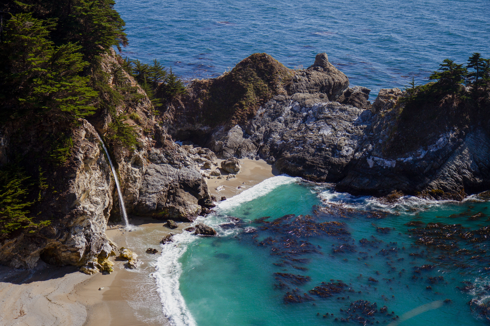

Hey there I am Larry Chu!
I am a 1st year transfer student, who is pursing Visual Communication Design in San Francisco State University. I
love photography and cars.
This website is where I share my work, journey, insights, and projects involving SFSU and personal jobs. My goal is
to inspire others and to gain new clients with my work.
I am based in San Francisco!
I use to own a pink car!
I am a semi-pro in bowling!
I work two jobs on top of my personal interests!